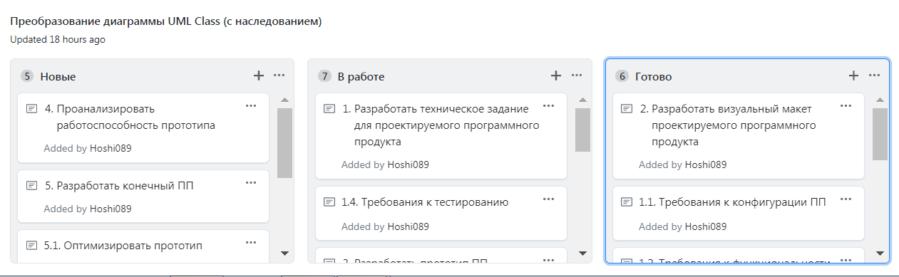
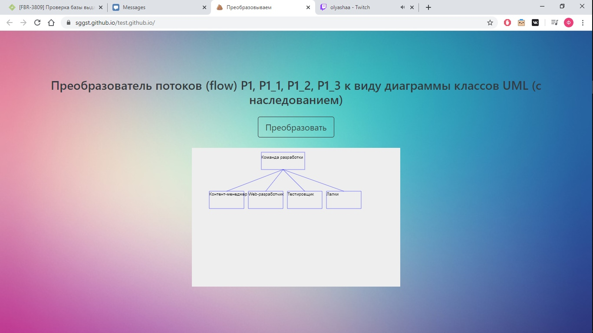

Выбранный эпик - 4 UML Class (Преобразовать потоки (flow) P1, P1_1, P1_2, P1_3 к виду диаграммы классов UML (с наследованием))
Выбранный проект - интерфейс ("Приложение и проект визуализации моделей)
Выбранная задача - данные (программная реализация тестового набора данных)
Задачи на канбан-доске
Чтобы попробовать преобразовать диаграммы нажми сюда
Пример работы программы
